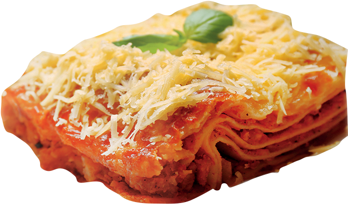

Lasagna's Recipe

Description
Ingredients
- Lasagna noodles
- Ground beef, pork, and/or veal
- Onion
- Garlic
- Crushed tomatoes
- Red wine
- Ricotta cheese
- Egg
Steps
- Cook lasagna noodles according to package instructions until al dente. Drain and set aside.
- Prepare the Bolognese sauce by sautéing garlic and onions in olive oil until fragrant. Add ground beef, pork, and/or veal, cooking until browned. Stir in crushed tomatoes, tomato paste, Italian herbs, and a splash of red wine. Simmer for at least 30 minutes to develop flavors.
- In a separate bowl, mix together ricotta cheese, shredded mozzarella, grated Parmesan, and a beaten egg. Season with salt, pepper, and chopped fresh basil or parsley.
- Preheat oven to 375°F (190°C). Assemble the lasagna by spreading a thin layer of Bolognese sauce on the bottom of a baking dish. Layer noodles, followed by a portion of the cheese mixture, and more Bolognese sauce. Repeat layers until all ingredients are used, finishing with a final layer of sauce and cheese on top.
- Cover the baking dish with foil and bake for 30 minutes. Remove foil and bake for an additional 15-20 minutes, or until bubbly and golden brown on top.
- Let the lasagna cool for a few minutes before slicing and serving. Enjoy!
Indulge in the comforting layers of a classic lasagna recipe, a culinary masterpiece that transcends generations. Begin by crafting a rich, savory Bolognese sauce, simmered to perfection with aromatic garlic, onions, and a medley of ground meats. Embrace the symphony of flavors as the sauce melds with crushed tomatoes, Italian herbs, and a hint of red wine, infusing every bite with depth and warmth.
Layer upon layer of al dente lasagna noodles intertwine with velvety ricotta cheese, mozzarella, and Parmesan, creating a decadent tapestry of textures. Elevate each tier with a generous ladle of the luscious Bolognese, ensuring every inch is blanketed in culinary bliss. Baked to golden perfection, this timeless dish emerges from the oven with bubbling cheese and fragrant herbs, ready to captivate taste buds and create lasting memories around the table.